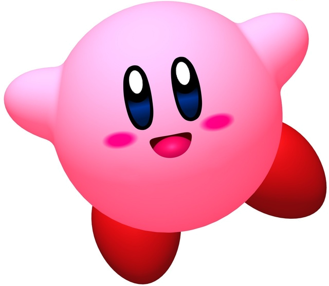

So....What am I looking at?
CSS animations are a simple, fun way to add some character to the user experience.
Gone are the days of littering one's homepage with animated GIFs and loads of
infinitely scrolling and blinking text. Maybe not gone, persay, but at the very
least, most of the supurfluous glittering nonesense is now being executed with
CSS and JavaScript tricks rather than tons of bulky images that need to be loaded and
continuously rendered.
Why would I use these things?
Guess what? You don't need to know JavaScript to use CSS animations!
Even if you do write JavaScript, you might not want to weigh your application down
with unnecesasry extras when you need just a few minor enhancements. CSS
animations often perform better than simple JavaScript animations. The browser
itself can optimize and increase performance by adjusting the frame rate within
its own rendering engine. This optimization allows most CSS animations to run
more quickly and smoothly than their JavaScript counterparts.
Bounce With Me
So, what can you animate? Most elements on your page can be manipulated
with animations and transformations that alter the element's color, size,
shape, or location. The
sorcery
behind these animations is in the keyframes
assigned to the elements. Keyframes are used to set the starting and
ending states of each animation. The animation starts at 0% and ends at
100%, with any number of waypoints marked using any percentage in between.
Avert your eyes...
Here are a couple of
examples
of the animation styles that are available
next to the code that created them. Each example utilizes multiple subclasses
in order to achieve the final effect. It is important to note the difference
between the individually listed animation attributes in the bounce
example and the shorthand syntax used in the spin example.
When using the animation: tag, attributes can be strung
together using commas provided they are listed in the correct order.

@keyframes bounce {
0% {
transform: scale(0.1);
opacity: 0;
100% {
transform: scale(1);
}
}
.animate {
animation-duration: 2s;
animation-name: bounce;
animation-iteration-count: infinite;
animation-direction: alternate;
}
 @keyframes spin {
from {
transform: rotate(0deg);
}
to {
transform: rotate(360deg);
}
}
.animateSpin {
border-radius: 50%;
animation: spin 3s infinite linear;
}
@keyframes spin {
from {
transform: rotate(0deg);
}
to {
transform: rotate(360deg);
}
}
.animateSpin {
border-radius: 50%;
animation: spin 3s infinite linear;
}
'Tis one thing to be tempted, another thing to fall.
It is easy to get carried away with animations once you've lifted the lid
from Pandora's Box. In researching animation ettiquette and
implementation,
I came across a recurring theme -
animate deliberately.
Used intentionally as an engaging or interactive enhancement, CSS animations,
offer the opportunity to elevate both the design and
the user experience of a website.
The tools are out there.
Offer the user feedback. Provide instructions.
Use them for art. Use them for emphasis. But don't go
crazy-go-nuts.
{kind=link}